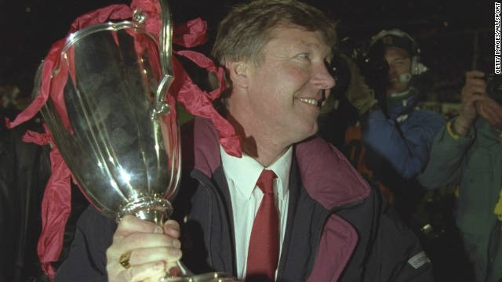

Chương 22

hông mấy ai tin Manchester United sẽ lọt vào vòng bốn Cúp FA, bởi,dưới sự dẫn dắt của Brian Clough, Nottingham Forest nổi danh là chuyên gia đá cúp[1]. Hơn thế nữa, họ lại có lợi thế sân nhà. Trước trận đấu, bình luận viên Jimmy Hill phán một câu xanh rờn: Nhìn United khởi động là đã thấy thua! Nhưng rồi, một “Nhi Đồng Fergie” khiến Hill phải “nuốt lưỡi”: Phút 56, nhận bóng từ Mark Hughes, tiền đạo 20 tuổi Mark Robins đánh đầu ghi bàn thắng duy nhất của trận đấu[2].
Có thật là bàn thắng của Robins đã cứu vãn sự nghiệp của Alex Ferguson? Martin Edwards phủ nhận điều đó. Theo Edwards, ông không hề ra tối hậu thư, mà còn trấn an Alex “Cứ yên tâm, dù kết quả thế nào thì anh vẫn an toàn”. Sir Bobby Charlton cũng khẳng định ban lãnh đạo chưa bao giờ bàn đến việc thay HLV. Tuy vậy, nếu như trận đó mà thất bại, áp lực từ các fan chắc chắn sẽ tăng thêm gấp bội, và chẳng có gì bảo đảm là ban lãnh đạo sẽ miễn nhiễm mãi với áp lực ấy.
Vượt qua Forest, United tiếp tục đánh bại Hereford, Newcastle, và Oldham, giành quyền vào đá chung kết với Crystal Palace. Biết rõ Palace rất mạnh trong những tình huống cố định, Alex bắt học trò tập đi tập lại bài chống đá phạt, đồng thời dặn dò Jim Leighton phải hết sức cẩn thận, nếu không chắc 100% sẽ bắt dính bóng thì đừng bao giờ lao ra. Dặn là một chuyện, có làm được không lại là chuyện khác. Trận đấu mới bắt đầu được 18 phút, Palace được hưởng một quả đá phạt bên cánh phải. Bóng được câu vào vòng cấm địa, Leighton xông ra, rồi…đứng ngẩn ngơ chẳng biết làm gì, để cho O’Reilly dễ dàng đánh đầu mở tỷ số.Lần lượt Bryan Robson, rồi Mark Hughes giúp Quỷ Đỏ lội dòng nước ngược, trước khi Ian Wright đưa trận đấu về thế cân bằng. Trong 30 phút hiệp phụ, Wright và Hughes mỗi người ghi thêm một bàn thắng. Bất phân thắng bại 3-3, hai đội phải đá lại sau đó năm ngày.
Nhìn Leighton ủ rũ ôm đầu sau trận đấu, Alex lắc đầu ngao ngán. Cầu thủ vấp váp là chuyện vẫn thường xảy ra, quan trọng là có giữ vững được tinh thần để đứng lên hay không. Quan sát Leighton, Alex nhận ra thủ môn này đã hoàn toàn đánh mất sự tự tin, nếu để anh tiếp tục bắt chính trong trận tới sẽ là quá mạo hiểm. Mặt khác, ông hiểu tâm lý Leighton: Nếu phải ngồi dự bị trong trận cầu quan trọng nhất mùa giải, anh sẽ suy sụp hoàn toàn. Leighton là học trò ruột của Alex, đã từng chinh chiến cùng thầy từ thuở ở Aberdeen, lẽ nào tàn nhẫn với anh cho đành? Suy tính mãi, Alex đành đặt lý trí lên trên tình cảm cá nhân. Ông giành suất đá chính cho thủ môn dự bị Les Sealey. Tài năng của Sealey thật sự không bằng Leighton, nhưng anh ta lại cho rằng mình giỏi hơn. Vào thời khắc này, Alex cần sự tự tin đó.
Sealey không phụ lòng Alex: anh chơi khá tốt trong trận tái đấu. Trận này, Mark Robins chỉ ngồi dự bị, nhưng một “Nhi Đồng Fergie” khác lập công: Hậu vệ cánh trái Lee Martin. Phút 59, lúc đang đứng bên phần sân nhà, Martin nghe trợ lý Archie Knox hét: Lao lên. Anh liền tăng tốc tiến vào vòng cấm địa đối phương, vừa kịp lúc nhận đường chuyền từ Neil Webb để dứt điểm tung lưới thủ môn Palace, đem Cúp FA, và một suất dự Cúp C2 Châu Âu, về Old Trafford. Cuối mùa năm đó, United chỉ đứng hạng mười ba ở giải VĐQG, nhưng Cúp FA đủ làm fan hâm mộ tạm thời hạ hỏa.
Alex Ferguson không quên công người đã giúp ông giành danh hiệu đầu tiên tại Anh. Ngay sau khi đoạt cú ăn ba lịch sử vào năm 1999, Alex gọi cho Lee Martin, lúc này đang thi đấu cho Bristol Rovers. Ông tổ chức một trận giao hữu giữa Manchester United và Bristol. Bao nhiêu tiền vé thu được đều giành tặng Martin.
Trong đêm United đăng quang ở Wembley, có một người buồn: Jim Leighton. Leighton từ chối nhận huy chương, và không bao giờ bỏ qua cho Alex Ferguson cái “tội” đã dám loại mình. Alex tìm cách hòa giải, nhưng Leighton không chấp nhận. Quan hệ giữa hai thầy trò xấu đi, Leighton từ vị trí chính thức nay trở thành lựa chọn thứ tư: Sau Les Sealey, Gary Walsh, và Mark Bosnich. Anh bắt cho Arsenal và Reading theo hợp đồng cho mượn, rồi rời Old Trafford trở về Scotland với Dundee.
Kỳ chuyển nhượng hè 1990, Manchester United mua Denis Irwin từ Oldham Athletic. Không chỉ phòng ngự tốt, Irwin còn là một chuyên gia đá phạt. Anh sẽ giữ độc quyền vị trí hậu vệ cánh trái ở Old Trafford trong suốt hơn 10 năm, khiến ngôi sao đang lên Phil Neville phải ngồi dự bị hết mùa này sang mùa khác. NgoàiIrwin, United ký hợp đồng chuyên nghiệp với hai học viên trẻ: Ryan Giggs và Darren Ferguson. Ryan Giggs từ lâu đã nổi tiếng thần đồng, còn Ferguson được chú ý do anh là…con trai của HLV trưởng[3]. Tuy vậy, cả Giggs lẫn Ferguson đều chưa cạnh tranh nổi một chỗ trong đội hình chính.
Nói đến giải hạng nhất mùa 1990-1991, người ta nhớ mãi cuộc hỗn chiến giữa Arsenal và Manchester United. “Hỗn chiến” theo đúng nghĩa đen! Tất cả bắt đầu khi Nigel Winterburn vào bóng thô bạo với Brian McClair. McClair nổi điên, trả đũa bằng cách liên tục…đá đít Winterburn. Rồi cầu thủ hai bên xông vào thượng cẳng chân, hạ cẳng tay. Liên Đoàn Bóng Đá phải can thiệp, trừ Arsenal hai điểm, và United một. Dù bị trừ điểm, Arsenal vẫn đăng quang ngôi vô địch, còn United chỉ về đích thứ sáu, dưới cả Manchester City! Điều an ủi là Quỷ Đỏ giành một lúc hai phần thưởng cá nhân. Mark Hughes lần thứ hai được tôn vinh với danh hiệu Cầu Thủ Xuất Sắc Nhất nước Anh (PFA), trong khi Lee Sharpe nhận giải Cầu Thủ Trẻ Xuất Sắc.
Ở các cúp, tình hình khá là khả quan. Trong khuôn khổ League Cup, United đả bại Liverpool 3-1, trước khi đè bẹp Arsenal 6-2 với một hattrick của Lee Sharpe. Những thắng lợi tưng bừng khiến đội trở nên chủ quan khi bước vào trận chung kết với Sheffield Wednesday do Ron Atkinson dẫn dắt. Ron “lớn” có dịp báo thù CLB đã sa thải mình: Sheffield giành cúp sau chiến thắng 1-0.
Trên đấu trường C2, Quỷ Đỏ thành công hơn. Phải đến vòng tứ kết, họ mới chạm trán đối thủ cứng cựa: Montpellier, với những ngôi sao như Laurent Blanc và Carlos Valderrama. Bị cầm hòa 1-1 tại Old Trafford, United xuất sắc giành thắng lợi 2-0 ngay trên đất Pháp. Vào bán kết, lá thăm may mắn đưa CLB đến Ba Lan gặp Legia Warsaw. Lee Sharpe tỏa sáng trong cả hai lượt trận, truyền cảm hứng giúp đội nhà thắng 4-2 chung cuộc. Trong trận bán kết còn lại, Barcelona vượt qua Juventus.
Chung kết Cúp C2 mùa 1990-1991 không chênh lệnh như mùa 1982-1983. Tuy nhiên, Barcelona rõ ràng vẫn ở thế thượng phong. Bryan Robson và Mark Hughes đều là ngôi sao quốc tế, nhưng vẫn chưa bằng Michael Laudrup và Hristo Stoichkov. Steve Bruce và Gary Pallister là cặp trung vệ thép, nhưng không ai nổi tiếng bằng Ronald Koeman. Riêng về vị trí thủ thành, Les Sealey chỉ đáng…xách dép cho Andoni Zubizarreta. Trong khi United hơn 20 năm vẫn còn lận đận, Barcelona đang trải qua một hoàng kim thời đại; dường như bất cứ vật gì HLV của họ, Johan Cruyff, chạm tới, đều biến thành vàng!
Trước trận chung kết, Alex Ferguson đón nhận cả tin tốt lẫn tin xấu. Tin tốt là hai trụ cột của Barca sẽ vắng mặt: Stoichkov bị chấn thương, còn Zubizarreta thụ án treo giò. Tin xấu là Archie Knox sẽ rời Old Trafford, về Rangers làm trợ lý cho Walter Smith. “Nghĩ lại đi, Archie”, Alex khẩn khoản thuyết phục Knox, “Chúng ta sắp tranh cúp với Barcelona. Chú mà đi lúc này, không chừng sẽ không bao giờ còn cơ hội dự một trận đấu lớn như thế đâu”[4]. Song Knox vẫn quyết tâm ra đi. Trong thời gian quá gấp, không kịp bổ nhiệm người mới, Alex quyết định kiêm nhiệm. Mỗi ngày, ông lại xỏ giày ra sân, chỉ đạo học trò tập luyện.
Cũng như tám năm về trước, Alex phải đối đầu với một nhân vật huyền thoại. Dùng lại chiêu cũ, ông kính cẩn tặng Johan Cruyff một chai whisky, hy vọng lịch sử sẽ tái diễn. Nhưng lần này, trên SVĐ De Kuip, Rotterdam, bàn thắng không đến sớm. Thế trận diễn ra ngang ngửa trong 45 phút hiệp một. Lee Sharpe bị Nando[5] bắt bài, không còn bùng nổ nơi cánh trái, song về phía Barca, Koeman cũng bị McClair tạo áp lực mạnh, không dám dâng cao như thường lệ. Bước vào hiệp hai, nhận chỉ thị từ Alex, Sharpe chơi bó vào trong hơn, không chỉ bám cánh như trước, khiến các hậu vệ đối phương lúng túng thấy rõ. Song le, người phá vỡ bế tắc là trung vệ Steve Bruce. Phút 67, từ đường đá phạt của thủ quân Bryan Robson, Bruce bật cao đánh đầu, hạ gục thủ thành Carles Busquet. Trong lúc bóng chưa kịp vượt qua vạch vôi, Mark Hughes trờ tới, đệm thêm một cú, “cuỗm” mất bàn thắng của đồng đội. Bruce khó chịu, nhưng không giận lâu. Dù sao thì mùa đó, anh cũng đã ghi đến 19 bàn thắng, con số khó tin đối với một hậu vệ.
Chỉ bảy phút sau, lại Hughes lập công, lần này với một bàn thắng đường đường chính chính. Vẫn là Bryan Robson kiến tạo, đưa Hughes vào thế đối mặt thủ môn đối phương. Tiền đạo xứ Wales bình tĩnh lừa qua Busquet, nhân đôi cách biệt. Dẫn hai bàn khi trận đấu chỉ còn 15 phút, tưởng chừng United đã có thể yên tâm, nào ngờ Les Sealey lại mất tập trung, để lọt lưới cú sút phạt không mấy nguy hiểm của Ronald Koeman. Barcelona tràn lên ép sân trong những phút cuối cùng. Michael Laudrup suýt nữa san bằng tỷ số, nếu Clayton Blackmore không kịp “cứu giá” ngay trên vạch vôi. Alex Ferguson đã phải ra hiệu cho Gary Walsh khởi động, định sẽ tung anh vào thay Sealey nếu trận đấu phải đá thêm hiệp phụ. May thay, không có thêm bàn thắng nào được ghi.
Vậy là, nhờ có Manchester United mà sau năm mùa bị “cấm vận”[6], bóng đá Anh đã trở lại châu Âu trong vinh quang. Alex Ferguson trở thành HLV thứ nhì sau Johan Cruyff giành Cúp C2 với 2 CLB khác nhau. Đội hình United trong trận chung kết đáng nhớ ở Rotterdam như sau: Sealey (TM), Irwin, Bruce, Pallister, Blackmore (HV), Phelan, Robson, Sharpe, Ince (TV), McClair và Hughes (TĐ).
Vừa đánh bại Barca, Alex nhận được lời mời về làm HLV cho Real Madrid. Ông từ chối ngay, không chút đắn đo: Chẳng việc gì phải tới Bernabeu, khi bình minh đang ló dạng tại Old Trafford. “Chúng tôi sẽ VĐQG mùa tới”, Alex tuyên bố trong cơn hưng phấn, “Một khi đủ sức giành Cúp Châu Âu, có lý nào lại không thắng nổi giải quốc nội?”

Alex Ferguson bên Cúp C2 năm 1991 (ảnh: Sport.ripley.za.net)
[1] Nottingham Forest là đội bóng duy nhất trong lịch sử có số lần đoạt Cúp C1 nhiều hơn số lần VĐQG. Họ chỉ VĐQG một mùa duy nhất (1977-1978), nhưng lại đoạt đến hai Cúp C1 (1979, 1980). Vì vậy, khi còn sống, Brian Clough hay nói đùa: “Tôi có 2 thứ mà Alex Ferguson không có. Mà này, ý tôi không phải là hai hòn “ấy” đâu nhé!”
[2] 1989-1990 là mùa đáng nhớ nhất trong thời gian Mark Robins khoác áo Manchester United. Trên tất cả các mặt trận, anh chỉ được ra sân 13 lần trong đội hình chính thức, nhưng cũng kịp đóng góp 10 bàn thắng.
[3] Cả ba con của Alex Ferguson đều đam mê bóng đá, nhưng chỉ mình Darren trở thành cầu thủ chuyên nghiệp. Sợ mang tiếng ưu ái con trai, ban đầu Alex không muốn ký hợp đồng với Darren, nhưng cả Brian Kidd và Archie Knox đều bảo đảm Darren đủ trình độ thi đấu cho United, và thuyết phục ông ký.
[4] Quả thật, cho đến tận ngày nay (2012), Knox vẫn chưa có cơ hội dự một trận chung kết cúp Châu Âu.
[5] Trong hồi ký, Alex Ferguson nhớ nhầm hậu vệ phải của Barcelona trong trận này là Miguel Angel Nadal. Thật ra, phải là Nando mới đúng.
[6] Bóng đá Anh bị treo giò năm năm trên đấu trường châu Âu, sau vụ CĐV Liverpool gây bạo loạn ở Heysel.